Introducing the Grid Builder
Grid components are the heart of Alpha Five Web Publishing. They retrieve and display data from a variety of types of databases. They allow the user to search for, edit, insert, and delete records. You create grid components with the Grid Builder.
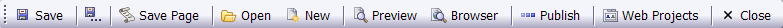
| Function | Description |
| Save | Saves the currently open grid. |
| Save As | Saves the currently open grid after asking for the path and filename. |
| Save Page | Creates a temporary file that contains the grid, optionally opening the page in the HTML Editor. |
| Open | Allows you to select and open an existing grid from any of your projects. |
| New | Allows you to create a new grid. |
| Browser | Displays the grid component in a temporary page in your browser. |
Publishes the grid to the destination associated with the selected profile. | ||
| Displays the Web Projects Control Panel. | |
| Close | Closes the Grid Builder. |
The page menu allows you to select different sets of menus. Different menus will appear or disappear, depending on the options that you select.
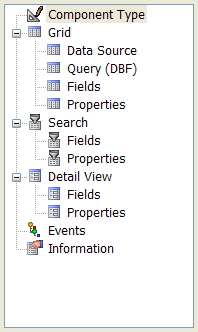
Menu | Description |
Defines the style of the grid and whether it will have search and/or detail parts. | |
Defines the type of database connection that you require. | |
|
Grid > Query (AlphaDAO) | Specifies the database, table, filter expression, and order expression. |
Selects the fields that appear in the grid and sets their properties. | |
Sets properties for the grid, including style. | |
Appears if the grid is updateable. Sets add, edit, and insert properties. | |
Selects the fields that appear in the search part and sets their properties. | |
Sets properties for the search part. | |
Selects the fields that appear in the detail view part and sets their properties. | |
Sets properties for the detail view part. | |
Allows you to create scripts to respond to grid events. | |
Allows you to record information about the grid. |
The component type menu defines the major characteristics of the grid. See also Selecting the Grid Component Type.
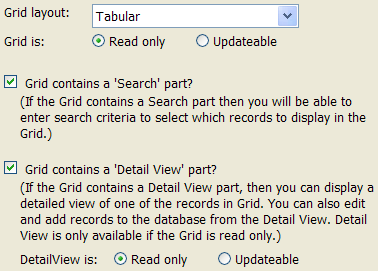
Function | Description |
Grid Layout | Defines the style of the grid and whether it will have search and/or detail parts. |
Grid is: Read only | Causes the search fields to be displayed in label controls. |
Grid is: Updateable | Causes the search fields to be displayed in text box controls. |
Grid contains a 'Search' part? | Displays the Search > Fields and Search > Properties menus. |
Grid contains a 'Detail View' part? | Displays the Detail view > Fields and Detail view > Properties menus. |
DetailView is: Read only | Causes the detail view fields to be displayed in label controls. |
DetailView is: Updateable | Causes the detail view fields to be displayed in text box controls. |
The Preview Pane shows a small sample of the grid's appearance using the currently selected style sheet.
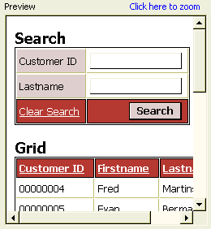
The Grid > Data Source Menu provides two options that select the type of database connection that will be used:
Alpha Five .dbf Tables - displays the Grid > Query (DBF) menu
ADO/ODBC/Access - displays the Grid > Query (ADO) menu
This menu defines the grid's data source, which is an Alpha Five table or view. See also Define an Alpha Five Table Query and Define an Alpha Five View Query.
Function | Description |
Display data from: Table | Specifies that the grid will come from a single table. Displays the Table name and Table alias fields. |
Display data from: View | Specifies that the grid will come from a view, which contains fields from 2 or more tables. Displays the Tables in View and Fields in View buttons. |
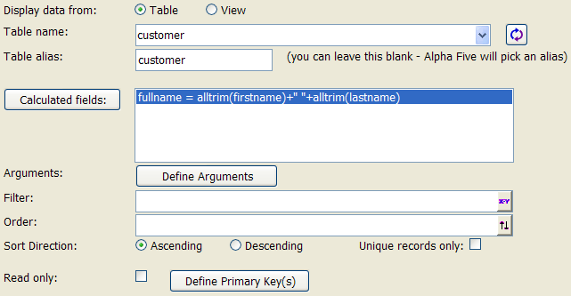
Alpha Five Table Query
Function | Description |
Table name | Displays a list of tables in the current database. |
Refreshes the contents of the Table name list. | |
Table alias | This is the name that is used internally to refer to the table. |
Tables in View | Displays the Define Join dialog, where you select the tables to use and their relationships to each other. |
Fields in View | Displays the Select Fields in View dialog, where you select the fields to display and define calculated fields. |
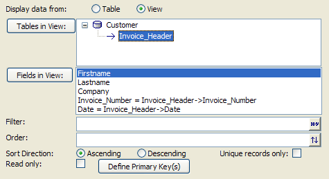
Alpha Five View Query
Function | Description |
Arguments | Displays the Define Arguments dialog, where you specify arguments to be used in filter and order expressions. |
Filter | Specifies the expression that selects the records that will be included in the grid. |
Order | Specifies the expression that orders selected records. |
Sort Direction | Specifies whether the order of records will be ascending or descending. |
Unique records only | Specifies that the grid will display unique records only. |
Read only | Specifies that the grid's fields will be displayed in label controls. |
Define Primary Key(s) | Specifies the field(s) that uniquely identify each record. |
This menu defines the grid's data source, which is a Microsoft Access or SQL Server table, view, or SQL SELECT statement. See also Define an Access Query, Define an ADO Query, and Define a SQL Query.
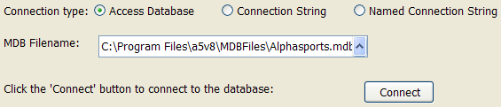
Connecting with a Access .MDB File
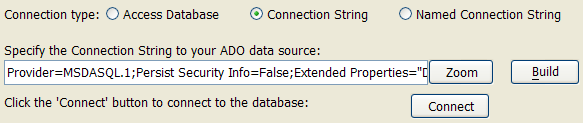
Connecting with an ADO Connection String
Function | Description |
Connection type | Specifies the type of connection to the database.
|
MDB Filename | Specifies the MDB file that will be the source of the grid's data. |
Specify the Connection String ... | Enter a connection string into this field. |
Build | Displays the Create SQL Connection String dialog, where you can create a connection string. |
Connection Name | Specifies the saved connection that you will use to connect to the database. |
Add/Edit Saved Connections | Displays the Connections dialog, where you can select, create, or edit a connection string. |
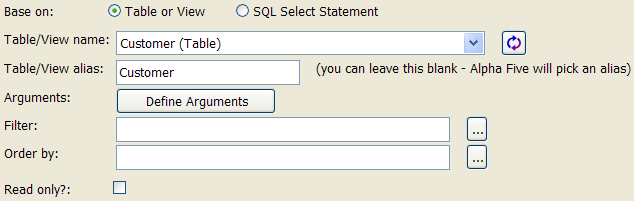
ADO Table Query
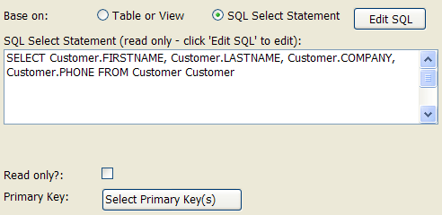
ADO SQL Query
Function | Description |
Base on: Table or View | Displays the Table/View name, Table/View alias, Filter, and Order by fields. |
Base on: SQL Select Statement | Displays the Edit SQL button, SQL Select Statement window, and Select Primary Key(s) button. |
Table/View name | Displays a list of tables in the current database. |
Refreshes the contents of the Table/View name list. | |
Table/View alias | This is the name that is used internally to refer to the table. |
Arguments | Displays the Define Arguments dialog, where you specify arguments to be used in filter and order expressions. |
Filter | Specifies the expression that selects the records that will be included in the grid. |
Order by | Specifies the expression that orders selected records. |
Read only | Specifies that the grid's fields will be displayed in label controls. |
Edit SQL | Displays the SQL Builder dialog, where you can define a SQL SELECT statement. |
Select Primary Key(s) | Specifies the field(s) that uniquely identify each record. |
This menu defines the grid's data source, which is a SQL SELECT statement directed to a SQL back-end database. Also see
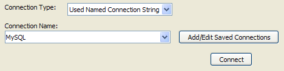
Connecting with a SQL Database Using a Named Connection String
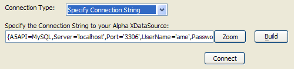
Connecting with a SQL Database By Building a Connection String
Function | Description |
Connection type | Specifies the type of connection to the database.
|
Build | Displays the Create SQL Connection String dialog, where you can create a connection string. |
Zoom | Displays the Edit Connection String dialog, where you can enter a connection string. |
Connection Name | Specifies the saved connection that you will use to connect to the database. |
Add/Edit Saved Connections | Displays the Connections dialog, where you can select, create, or edit a connection string. |
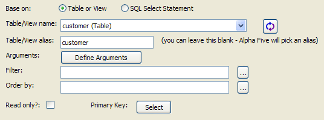
ADO Table Query
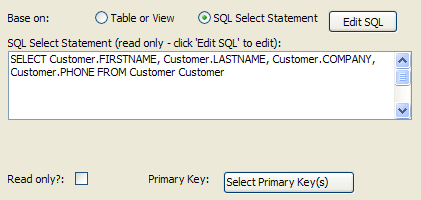
ADO SQL Query
Function | Description |
Base on: Table or View | Displays the Table/View name, Table/View alias, Filter, and Order by fields. |
Base on: SQL Select Statement | Displays the Edit SQL button, SQL Select Statement window, and Select Primary Key(s) button. |
Table/View name | Displays a list of tables in the current database. |
Refreshes the contents of the Table/View name list. | |
Table/View alias | This is the name that is used internally to refer to the table. |
Arguments | Displays the Define Arguments dialog, where you specifys arguments to be used in filter and order expressions. |
Filter | Specifies the expression that selects the records that will be included in the grid. |
Order by | Specifies the expression that orders selected records. |
Read only | Specifies that the grid's fields will be displayed in label controls. |
Edit SQL | Displays the SQL Builder dialog, where you can define a SQL SELECT statement. |
Select | Specifies the field(s) that uniquely identify each record. |
The Grid > Fields menu shows the fields that have been returned by your table or view selection or SQL query. You move these fields from the Available Fields list to the Selected Fields list to show them on the grid. See also Selecting the Fields to Display.
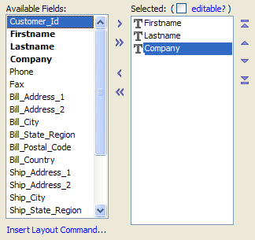
Available and Selected Fields Lists
Function | Description |
Grid is Editable? | Allows you to change a read-only grid to an editable grid. |
Available Fields | Shows the fields that have been returned by your table or view selection or SQL query. |
Selected Fields | Shows the fields that will appear on the grid, and the order in which the will appear. The top to bottom list order is the same as the left to right display order. |
| Add selected fields to the Selected Fields list. |
| Adds all fields to the Selected Fields list. |
| Removes selected fields from the Selected Fields list. |
| Removes all fields from the Selected Fields list. |
| Move the selected field to the top of the Selected Fields list. |
| Move the selected field up in the Selected Fields list. |
| Move the selected field down in the Selected Fields list. |
| Move the selected field to the bottom of the Selected Fields list. |
As you select a field in the Selected Fields list, you will see its properties displayed in the Field Properties control. There are many properties for each field, which you can set. Here is where you define the presentation of your data. For more information, see Setting Grid Control Properties.
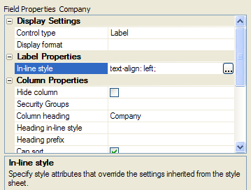
Typical Properties Dialog
The Grid > Properties Menu defines the formatting for the grid, including style sheet, and enables some special features. For more information, see Setting Grid Properties.
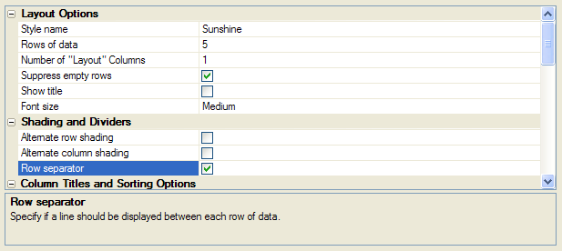
Grid > Properties Menu
The Grid > Update Settings menu only appears if the grid is updateable. This is where you control user delete, update, and insert operations. For more information, see Setting Update Properties.
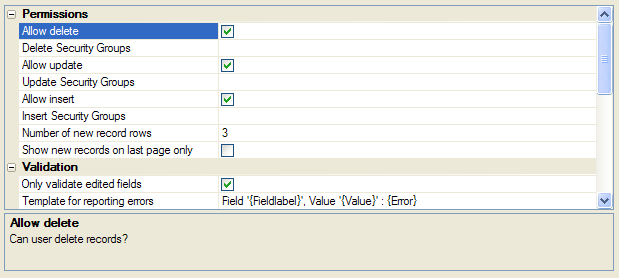
Grid > Update Settings Menu
_Fields_and_Detail_View_Fields_Menus1>Search > Fields and Detail View > Fields Menus
The Search > Fields and Detail View > Fields menus are similar to the Grid > Fields menus in function. Once you have used the Grid > Fields menu, their operation will be clear. Refer to Adding a Search Form and Adding a Detail View Form.
_Properties_and_Detail_View_Properties_Menus>Search > Properties and Detail View > Properties Menus
The Search > Properties and Detail View > Properties menus are similar to the Grid > Properties menus in function. Once you have used the Grid > Properties menu, their operation will be clear. Refer to Customizing the Search Part and Customizing the Detail View.
The Events menu allows you to add Xbasic code that examines the contents of a grid, properties of a grid, and the data that is being submitted. You can then take action to modify values or even cancel the submission.
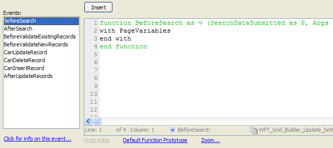
The Information menu allows you to add information about the grid. It also tracks the time of the grid's creation and last update.
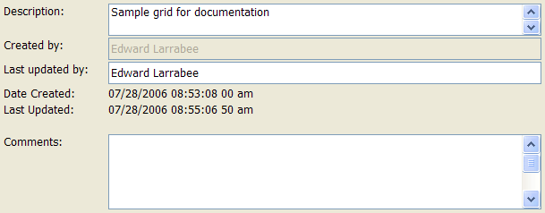
The Preview pane renders the grid only through a Microsoft HTML display control. It provides a quick WYSIWYG look at your work, but is not interactive.
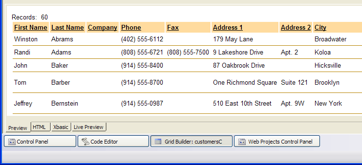
The HTML pane shows you the HTML code that the builder is creating in the background. You cannot edit this code, but you can copy it.
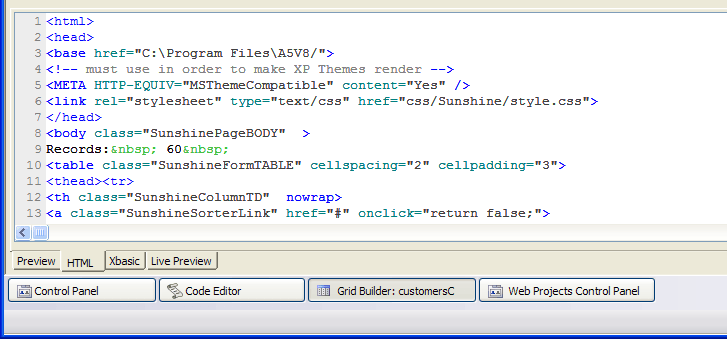
The Xbasic pane shows you the Xbasic code that the builder is creating in the background. You cannot edit this code, but you can copy it.
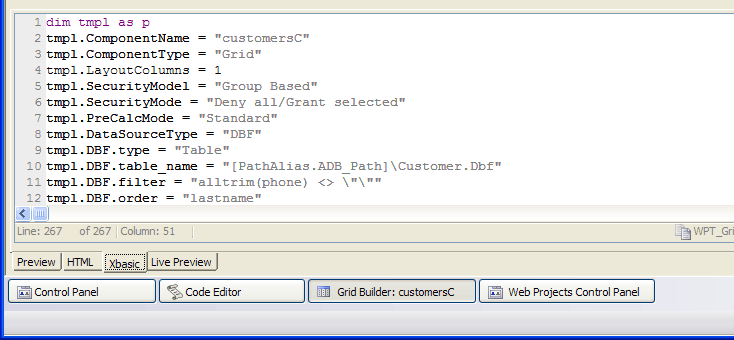
The Live Preview pane renders the grid only through a Microsoft ActiveX HTML display control. It provides a quick WYSIWYG look at your work and a way to check its behavior with live data. The appearance of the grid may be different than you see in another vendor's browser. The Live Preview function publishes the grid in a temporary file to the Live Preview folder. This folder is not under the webroot, so the grid never becomes available to the outside world.
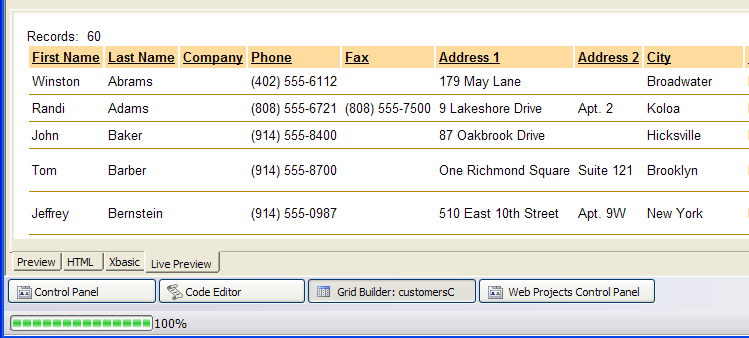
See Also